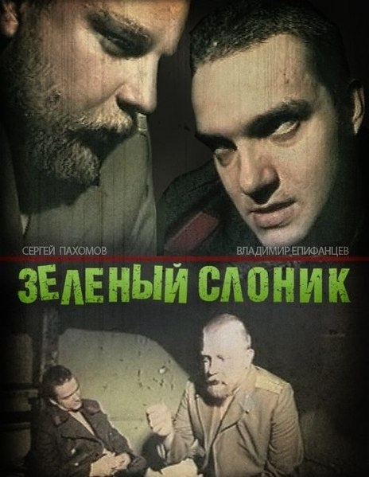
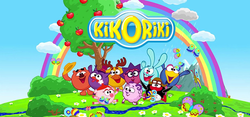

Green Elephant
1999
Vladimir Epifantsev Sergery PahomovAnatoliy Osmolovskiy Alexander Maslaev
The Green Elephant is a 1999 Russian underground film directed by Svetlana Baskova with an amateur video camera. The film was awarded a 2nd degree diploma in the section of full-length feature films of the Amateur Cinema competition of the film festival Loving Cinema! - 2000" in Moscow. Critics Andrey Plakhov and Alexander Pavlov describe the picture as a "cruel anti-militarist parable", emphasizing the tape's belonging to transgressive cinema and characterizing its art form as "primitivism and extreme naturalism".
Genre: Slatter, Trash, Horror
Director: Svetlana Baskova
Duration: 86 minutes
Language: Russian
Pirates of the Caribbean: The Curse of the Black PearlA

June 28 2003
Johny Depp Geoffrey RushOrlando Bloom Keira Knightley
Pirates of the Caribbean: The Curse of the Black Pearl is a 2003 American fantasy swashbuckler film directed by Gore Verbinski and the first film in the Pirates of the Caribbean film series. Produced by Walt Disney Pictures and Jerry Bruckheimer, the film is based on Walt Disney's Pirates of the Caribbean attraction at Disney theme parks.The story follows pirate Jack Sparrow (Johnny Depp) and blacksmith Will Turner (Orlando Bloom) as they rescue the kidnapped Elizabeth Swann (Keira Knightley) from the cursed crew of the Black Pearl, captained by Hector Barbossa (Geoffrey Rush), who become undead skeletons in moonlight.
Genre: Fantasy, adventure
Director: Gore Verbinski
Duration: 143 minutes
Language: English
Kikoriki
May 17 2004
Krаsh ChicoRosa Pin
Kikoriki,[2] known in the United States as GoGoRiki or BalloonToons and in Russia as Smeshariki (Russian: Смешарики), is a Russian animated television series consisting of 209 episodes of 6 minutes and 30 seconds each, aimed at children of 3 to 8 years. This series uses flash animation.
Genre: Comedy
Director: Denis Chernov
Numbe of episodes: 273
Language: Russian